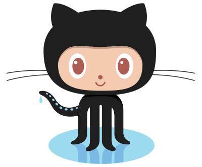

나 코딩한다 - Flutter 편

Flutter를 시작하기 위한 간편 안내서. 어렵지 않아요 ;)
Flutter를 시작하기 위한 간편 안내서. 어렵지 않아요 ;)
Git Bash 혹은 터미널을 실행합니다. (환경변수 설정필요)
사용자 이름과 이메일정보를 설정합니다.
git config --global user.name "John Doe"
git config --global user.email johndoe@example.com
GitHub에 계정이 없다면 계정도 만들어야해요.

GitHub 회원가입
회원가입 또는 기존 계정으로 계정을 준비하신 분은
아래 양식으로 gdg.suwon@gmail.com으로 메일을 보내주세요.
제목: "나 코딩한다 Github 계정신청"
Github 계정 : [my.email.address@email.com]
메일을 보낸 뒤, 승인 메일을 기다려주세요. (최대한 빠르게 승인할께요!)
GDG Suwon에서 만든 repository를 복제해요.
git clone https://github.com/gdgsuwon/solocoding2019.git
cd solocoding2019
checkout을 통해 자신의 브랜치로 이동해요.
git checkout -b <자신의 브랜치명>
자신의 브랜치에 ".gitignore" 파일을 작성해보아요.
".gitignore" 파일이란?
불필요한 build 결과물이나 환경설정을 git에서 제외시킬 수 있는 설정파일이에요.
아래 링크로 들어가서, 내용을 모두 복사붙여넣기하여
".gitignore" 파일을 자신의 브랜치 최상위 경로에 생성합니다.
https://raw.githubusercontent.com/nisrulz/flutter-examples/master/.gitignore
생성한 ".gitignore" 파일은 아래 명령어로 (인덱스에) 추가할 수 있어요.
git add .gitignore
이것이 바로 git의 기본 작업 흐름에서 첫 단계에 해당돼요.
하지만 실제로 변경 내용을 확정하려면 아래 명령을 내려야 한답니다.
git commit -m "Add .gitignore file"
자, 이제 변경된 파일이 HEAD에 반영됐어요.
하지만, 원격 저장소에는 아직 반영이 안 됐답니다.
현재의 변경 내용은 아직 로컬 저장소의 HEAD 안에 머물고 있어요.
이제 이 변경 내용을 원격 서버로 올려봅시다. 아래 명령을 실행하세요.
git push origin <자신의 브랜치명>
짝짝짝! 드디어 git 저장소에 gitignore 파일을 넣어보았습니다.
이처럼, 이후 작업하신 내용은 <자신의 브랜치>에 넣으시면 됩니다.
잘 안되셨나요? 도움이 필요하다면, 아래 링크로 질문을 남겨주세요.
질문남기기
git이 잘 익숙하지 않다면, 아래 링크를 참고하시는 것도 좋아요.
git - 간편안내서
자 그럼 이제부터 본격적으로 "Flutter" 를 시작해봐요! 설치부터